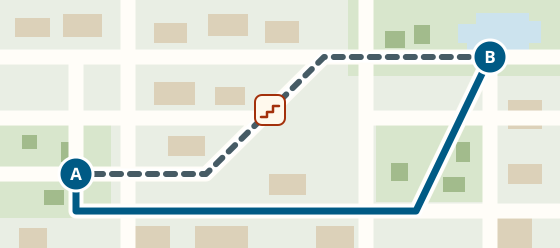
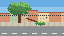
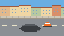
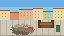
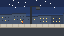
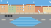
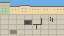
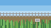
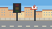
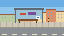

Zela: sua rua avisa, a prefeitura responde.
Relate buraco, poste apagado, lixo ou calçada quebrada em 3 minutos. O Zela leva o aviso ao órgão certo e mostra cada passo até a solução.
Rota acessível
O caminho mais curto nem sempre é o mais fácil.
Uma escada ou uma ladeira pode mudar seu trajeto. Escolha seu perfil de mobilidade — cadeira de rodas, andador, baixa visão e outras opções — e compare caminhos com as informações disponíveis no mapa.

- 6 minCom escada
- 9 minDesviando da escada
Os pedidos mais comuns em São Paulo
O que está atrapalhando a sua rua?
Escolha o tipo de problema. O Zela já sabe para qual órgão mandar.
-
O pedido mais comum

Árvore ou poda Galho caído, árvore com risco de queda ou poda. Relatar agora -

Buraco na rua Asfalto afundado ou cratera (tapa-buraco). -

Entulho ou descarte irregular Entulho, móveis velhos ou lixo jogado na rua. -

Poste apagado Lâmpada queimada, piscando ou acesa de dia. -

Bueiro entupido ou alagamento Boca de lobo entupida, água parada na rua. -

Calçada quebrada Piso solto, degrau ou rampa bloqueada. -

Mato alto ou terreno sujo Praça, canteiro ou terreno sem limpeza. -

Placa ou semáforo com defeito Sinalização apagada, caída ou pichada. -

Outro problema Ponto de ônibus, praça, pichação e mais.
Do aviso à solução, sem fila e sem telefone ocupado
Etapa 1 de 3
Você conta o que viu
Escolha o tipo de problema, informe o local e, se quiser, adicione uma foto. Antes de enviar, confira tudo.
- O CEP ou a localização do celular preenchem o endereço
- Se um vizinho já avisou, você só apoia o aviso
- Funciona no celular e com internet fraca
Acontecendo no seu bairro agora
Dados simulados para o protótipo. Apoiar um aviso existente aumenta a prioridade dele.
Ver o mapa do bairro